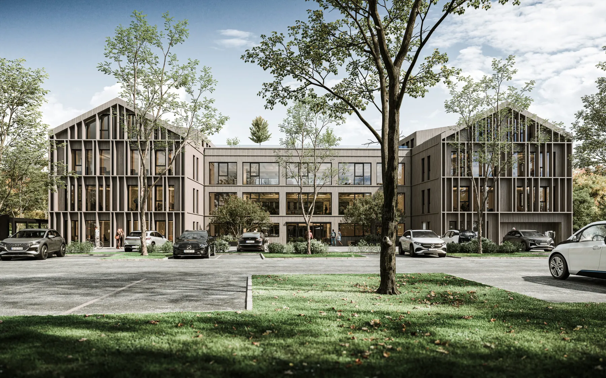
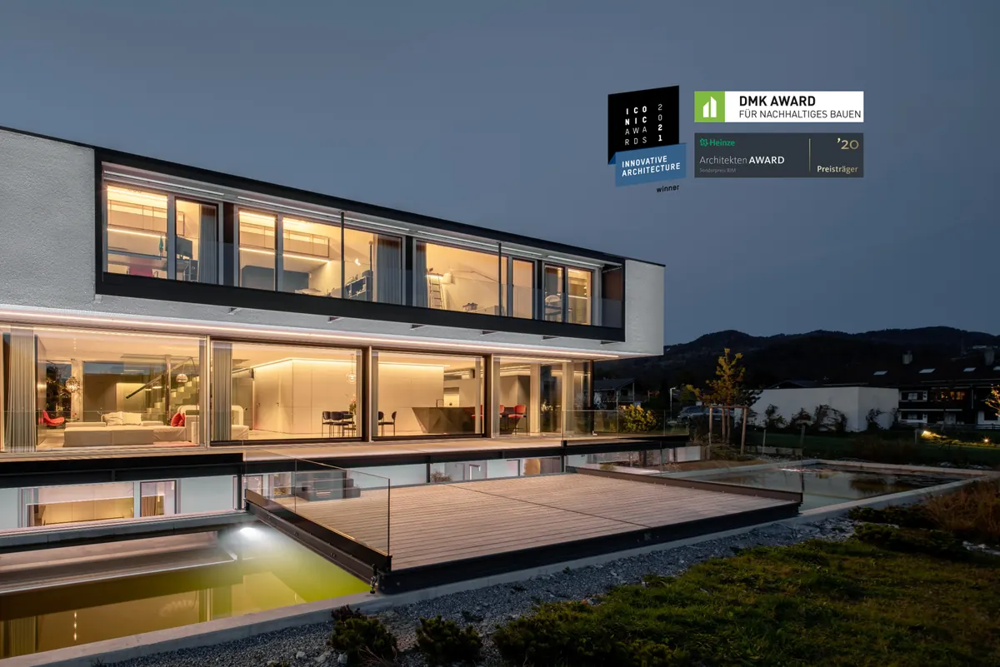
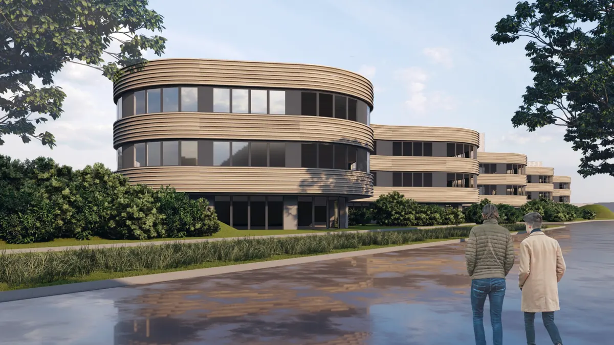
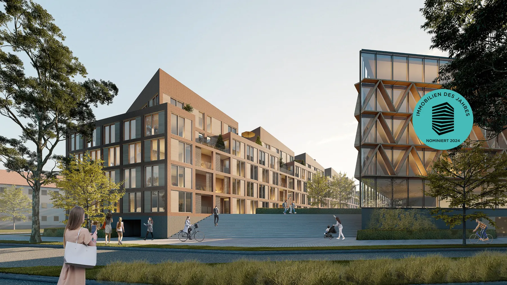
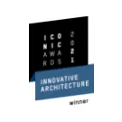
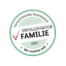
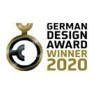
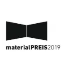
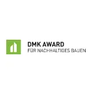
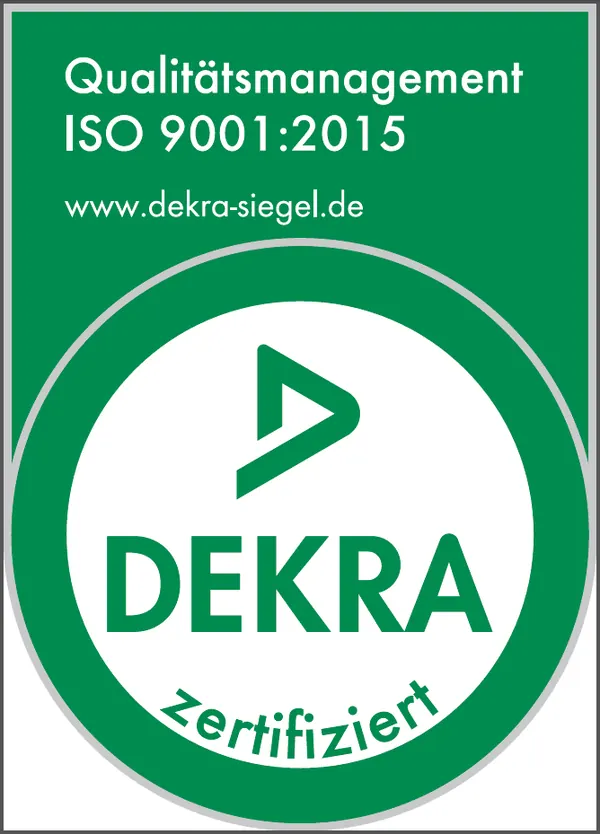

Wir entwickeln und nutzen in unserem Architektur Büro die neuesten digitalen und agilen Methoden, um Gebäude zu bauen und Entwürfe zu realisieren.
BrücknerArchitektenLeistungen
Architektur und Entwurf
Architektur und Entwurf
Brückner Architekten ist der essentielle Begleiter für jene, die den Entschluss zum Bau fassen – sei es durch Drang, Sehnsucht oder Gelegenheit. In unserem Wirken vereinen sich die zwei Pole: Die architektonische Exzellenz von Brückner Architekten und die reibungslose Umsetzung durch unser Realisierungsteam. Unser Fokus liegt dabei auf einer Architektur, die nicht nur ästhetisch anspricht, sondern auch eine zeitlose Qualität verkörpert.
Wir erkennen die tiefgreifende Wirkung von Bauwerken auf den Menschen und seine Umgebung und streben daher nach einer harmonischen Verbindung zwischen beiden. Als visionäre Schöpferinnen und Schöpfer stehen wir an vorderster Front des Gestaltungsprozesses, während wir gleichzeitig das gesamte Planungsteam zum Erfolg des Projekts führen.
"Solange wir Gebäude errichten, die Energie verbrauchen, machen wir etwas falsch!"
Laurent Brückner
Qualität und Transparenz sind keine Zufälle, sondern das Ergebnis klarer Visionen!
In unserem Qualitätsmanagement optimieren wir fortlaufend unsere Prozesse und setzen auf transparentes Projektmanagement sowie modernste Plattformen. Dies ist für uns die logische Konsequenz dessen, was wir denken und tun. Nun freuen wir uns, einen weiteren Meilenstein erreicht zu haben: Den erfolgreichen Nachweis unserer hohen Standards durch die Zertifizierung DIN ISO 9001:2015! Das offizielle Gremium der DEKRA Germany hat unsere Prozesse auf Herz und Nieren geprüft und ausgezeichnet – und das ohne Beanstandungen, gleich im ersten Durchgang. Ein Beweis für uns, dass sich unsere kontinuierliche Arbeit und unser Streben nach Exzellenz auszahlen. Jedem Entwurf, jeder Planung und jeder Ausführung liegt ein strukturiertes Qualitätsmanagement zugrunde, das wir ständig optimieren. Das Ergebnis? Projekte, die nicht nur funktional und innovativ sind, sondern auch langfristig überzeugen.
Unsere interne Qualitätsmanagementbeauftragte Lyubomira Varbanova und Geschäftsführer Laurent Brückner sind sich sicher: „Wir sind ein Team, das nie still steht, das sich ständig weiterentwickelt und immer nach neuen Wegen sucht, um innovativ und zukunftsfähig zu bleiben.“
Wie wir planen
Agile Planungs- und Steuerungsmethoden
Im Sinne unserer Auftraggeber und Projektpartner adaptieren wir visionäre digitale und agilea Strategien, um nicht nur die Entstehung von Bauwerken zu initiieren, sondern auch deren Visionen Wirklichkeit werden zu lassen. Ein nahtloser Ablauf von der Konzeption bis hin zur papierlosen Ausführung vor Ort wird bei uns gewährleistet – ein Garant für Kosten- und Planungssicherheit sowie eine optimierte Prozessgestaltung. Unsere tiefverwurzelte Expertise ermöglicht es uns, sämtliche Facetten zu durchdringen und dabei sämtliche Bereiche, Akteure, und Details im Fokus zu behalten. Die Anwendung agiler Methoden eröffnet uns zudem den Raum, um außergewöhnliche Lösungen für bauliche Herausforderungen zu entwickeln. In unserem Hause agieren Planungspartner wie die TGA Süddeutschland GmbH, renommierte Fachplaner für die Technische Gebäudeausrüstung, in enger Zusammenarbeit mit unseren Architekten und Fachplanern. Diese unmittelbare Verbindung ermöglicht spontane persönliche Abstimmungen und informelle Diskussionen, selbst während der Mittagspause, wodurch eine optimale interne Projektkommunikation gewährleistet ist.
BIM im Prozess
Wir setzen BIM nicht nur als Planungs- und Steuerungsmethode ein, sondern nutzen es auch als wirksames Instrument für das Wissensmanagement über den gesamten Projektzyklus hinweg. Diese ganzheitliche Herangehensweise ermöglicht es uns, den gesamten Prozess zu optimieren und flexibel sowie effizient auf neue Herausforderungen zu reagieren. Dabei koordiniert und integriert der oder die ArchitektIn die Leistungen der FachplanerInnen im Gesamtprojekt. Dank BIM und unseren 3D-Planungsmethoden können wir ein fehler- und kollisionsfreies Projekt gewährleisten. Building Information Modelling (BIM) ist die Schlüsseltechnologie, die es uns ermöglicht, sämtliche Aspekte im Blick zu behalten, Veränderungen in Echtzeit zu berücksichtigen und Prozesse intelligent zu steuern. Auf diese Weise tragen wir nicht nur dazu bei, Ressourcen, Geld und Zeit zu schonen, sondern auch die Umwelt zu schützen. Durch die Möglichkeit, Veränderungen kontinuierlich während des Prozesses zu berücksichtigen und Abläufe intelligent zu steuern, tragen wir aktiv zur Schonung von Ressourcen, Geld, Zeit und der Umwelt bei. Wir sind überzeugt, dass wir so Möglichkeiten erschaffen und nachhaltig die Zukunft bauen.
Unsere zu Recht anspruchsvollen Klienten profitieren von den Vorzügen unserer digitalisierten Bauprojekte, welche die Kooperation und Effizienz auf der Baustelle signifikant steigern. Bauherren erhalten sämtliche Entwürfe in einem hochentwickelten BIM-Modell, das es ermöglicht, die Gebäude bereits im Vorfeld ihrer Fertigstellung zu erkunden. Diese digitale und somit papierlose Baustelle erlaubt eine unkomplizierte Teilung und Präsentation der Entwürfe sowie einen ständig aktualisierten digitalen Zugriff für die ausführenden Unternehmen vor Ort. Auf diese Weise kann der gesamte Bauprozess vollständig papierlos abgewickelt rt. Auf diese Weise kann der gesamte Bauprozess vollständig papierlos abgewickelt rt. Auf diese Weise kann der gesamte Bauprozess vollständig papierlos abgewickelt
Papierlos und digital

Unsere zu Recht anspruchsvollen Klienten profitieren von den Vorzügen unserer digitalisierten Bauprojekte, welche die Kooperation und Effizienz auf der Baustelle signifikant steigern. Bauherren erhalten sämtliche Entwürfe in einem hochentwickelten BIM-Modell, das es ermöglicht, die Gebäude bereits im Vorfeld ihrer Fertigstellung zu erkunden. Diese digitale und somit papierlose Baustelle erlaubt eine unkomplizierte Teilung und Präsentation der Entwürfe sowie einen ständig aktualisierten digitalen Zugriff für die ausführenden Unternehmen vor Ort. Auf diese Weise kann der gesamte Bauprozess vollständig papierlos abgewickelt werden.
Smarte Ziele und toughes Bauconsulting
Unsere Expertise im Bauconsulting begleitet Sie durch sämtliche Etappen Ihres Bauprojekts – von der initialen Planung bis hin zur vollständigen Realisierung. Gemeinsam mit Ihnen formulieren wir intelligente Ziele und setzen sie in klar definierte Meilensteine um. Bei Brückner Architekten folgen wir seit Jahrzehnten einer bewährten Systematik, die aus unserem tief verankerten Qualitätsmanagement entspringt. Diese bewährte Vorgehensweise gewährleistet nicht nur unseren erfahrenen Mitarbeiterinnen, sondern auch den Neuankömmlingen einen herausragenden Leitfaden, um die gesteckten Ziele effektiv zu erreichen. Unsere Seniorarchitektinnen überwachen die Prozesse sorgfältig, unterstützt durch unser Projektmanagementsystem, um eine zweifache Kontrolle sicherzustellen.
Projektmanagement in allen Leistungsphasen
Projektmanagement bei Brückner Architekten ist transparent und stringent. Die vorrangige Aufgabenstellung an uns ArchitektInnen ist die Einhaltung wesentlicher Merkmale eines Projektes, die bereits zu Beginn definiert sind. Durch die Vielzahl unserer Projekte – von Modernisierungen im Bestand über die Ausführungsplanung in LPH5 bis hin zur Generalplanung – verfügen wir über eine hohe Anzahl an Benchmark-Projekten, die bereits sehr früh im Projekt vergleichend herangezogen werden können. Dies ist insbesondere zu Zeiten stark schwankender Baukosten und steigender Lohn- und Materialkosten auch unter wirtschaftlichen Gesichtspunkten wichtig und liefert eine zuverlässige Aussage über die Projektkosten.
Nachhaltigkeit und Technik
Qualität und Nachhaltigkeit
Wir können rechnen. Und die BauherrenInnen können auf uns zählen – auch als Generalplaner. Wir arbeiten multidisziplinär mit Partnern zusammen, die mit ihrer Professionalität und ihrer Wertevorstellung zum Gelingen beitragen. Aus dem symbiotischen Miteinander entsteht Bausubstanz mit Substanz. Das bedeutet Maßarbeit für Auftraggeber, weil die gebaute Immobilie ihren Geist, ihr Gefühl und ihre Haltung zum Ausdruck bringt. Das was in einem offenen Prozess mit unseren Auftraggebern entsteht, führen wir nach der Maxime „Qualität ist Ökologie“ aus – wir denken und handeln ganzheitlich. Wir erkennen die Verantwortung an die ArchitektenInnen auch hinsichtlich Qualität und gesamtheitlicher Nachhaltigkeit bzw. Blue Building haben. Da Holz heute mit der guten CO2-Bilanz zurecht eine Renaissance erlebt, greifen wir in diesem Zusammenhang natürlich auf diesen seit Jahrhunderten bewährten Werkstoff zurück.

REMS GMBH & CO. KG, Waiblingen
Energiekonzepte für Quartiere

Anerkennung Immobilie des Jahres 2024: Das Kathrein Werksviertel in Rosenheim. Mit einem starken Fokus auf Energieeffizienz und -Autarkie ernten wir die Anerkennung einer hochkarätigen Jury.
Die Auswahl der Energiequellen für ein Quartier ist vielfältig, einschließlich Solarthermie, Abwasserwärmerückgewinnung, Geothermie-Sondenfelder, Erdreichkollektoren, Grundwasser, Luft-Wasser-Wärmepumpen, Saisonal-Speicher, Photovoltaik, Fernwärme und Biomasse (Biogas, Holzgas-BHKW). Die Entscheidung hängt vom Standort, den Projektzielen und anderen Faktoren ab, die durch Simulation oder Machbarkeitsstudien ermittelt werden. Nachhaltige Energiekonzepte sind ein starkes Argument für die Vermarktung von Quartieren und können deren Wert steigern. Transparente Betriebskosten ermöglichen eine sichere Kalkulation während des laufenden Betriebs. Quartiere können optional auch unabhängig von externen Energiequellen werden, wenn Energieautarkie angestrebt wird. Eine niedrige CO2-Bilanz trägt zu übergeordneten Klimazielen bei und ist daher wichtig für die Quartiersentwicklung im Kontext kommunaler Energieziele. Frühzeitige Beratung zur Energiekonzeption erhöht die Chancen für nachhaltige Quartiersentwicklung.
Machtbarkeitsstudien und Simulationen
Die theoretische Grundlage für das Energiekonzept bildet eine sorgfältige Abwägung der Bedürfnisse, Projektziele und verfügbaren Ressourcen. In enger Zusammenarbeit mit unserem Partner vor Ort, der TGA Süddeutschland, erfolgt die kritische Evaluation und Auswahl des Konzepts unter Berücksichtigung verschiedener Parameter wie Standortgegebenheiten, langfristiger Zielsetzungen und politischer Rahmenbedingungen. Die ausgewählten Konzepte werden daraufhin in ein Simulationsprogramm integriert, um präzise Ergebnisse zu erzielen. Dabei werden Kennzahlen wie die jährlichen Betriebskosten für Energie, Wartung und Inspektion sowie die CO2-Bilanz erfasst und gründlich analysiert. Sowohl Einzelkomponenten wie Energiespeicher als auch Wetterdaten werden feinjustiert, um das maximale Potenzial auszuschöpfen. Die daraus resultierenden Simulationsergebnisse dienen dem Auftraggeber als Grundlage für eine transparente Bewertung der Kosten-Nutzen- und Risiko-Chancen-Verhältnisse.
Wir sind ausgezeichnet!
Wir sind ein seit 50 Jahren in München etabliertes Architekturbüro mit einem vielfach ausgezeichneten Portfolio von erfolgreich realisierten Projekten unterschiedlichster Maßstäbe, Typologien und Budgets. Mit unserem rund 50köpfigen, designstarken Team legen wir besonderen Wert auf Zukunftsfähigkeit und auf die „story behind“. Wir sind davon überzeugt, dass gutes Design nachhaltiges Design ist und stolz auf die Auszeichnungen, die wir bereits mit unseren Projekten gewonnen haben.






Brückner Architekten GmbH Gabriel-Max-Straße 4 81545 München
BRÜCKNERINNEN Interior
REON Realisierung
PROPERTYMAX Maximales Baurecht
TGA Süddeutschland GmbH
Rendeffect GmbH
Wir haben IhrInteresse geweckt?
Sie haben Fragen oder wollen einen Termin vereinbaren?